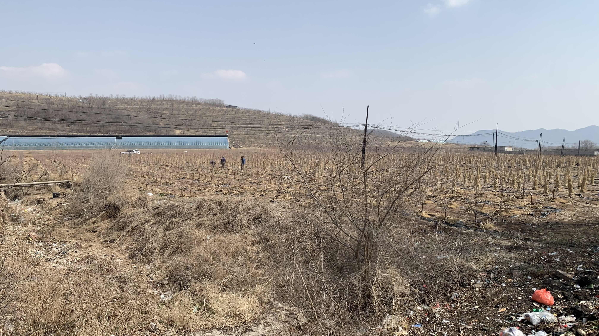
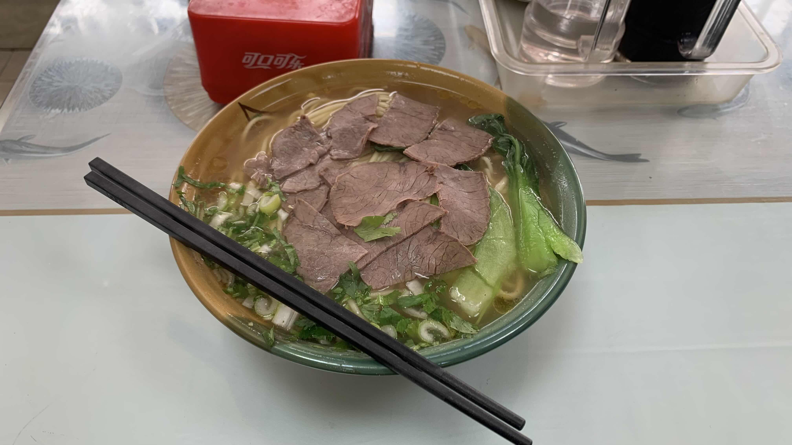
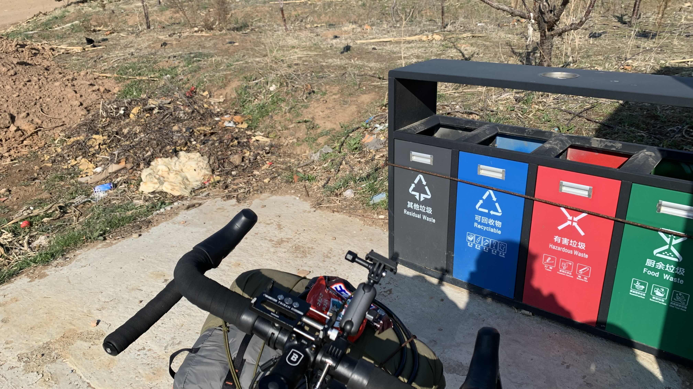
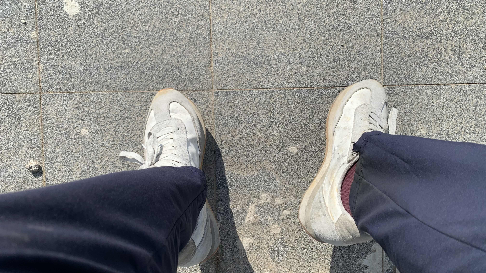
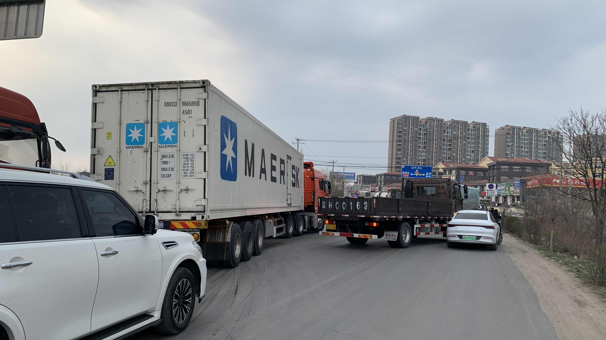
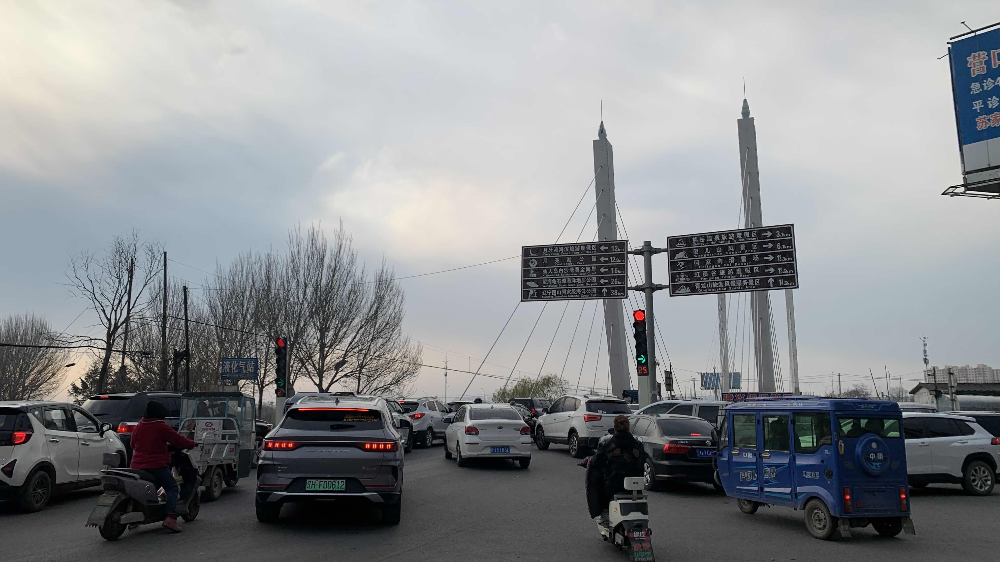
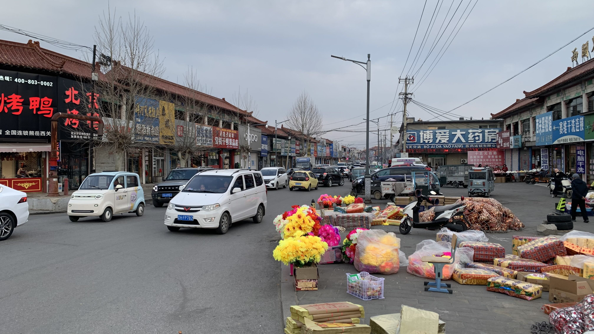
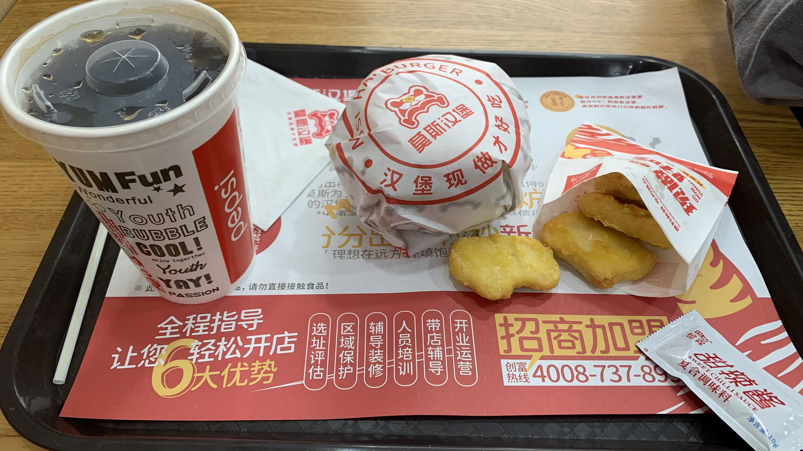
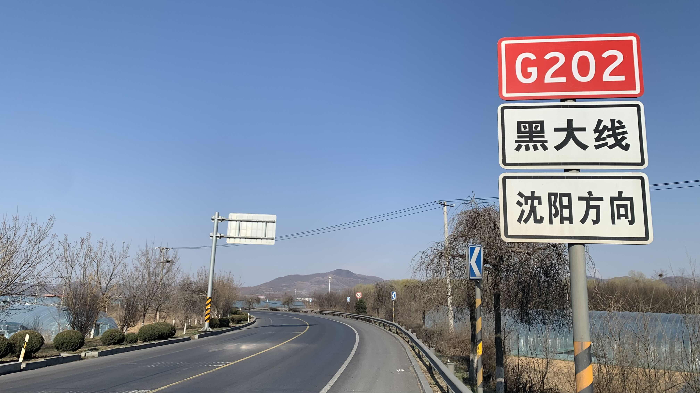

k-Day 032｜通道
「我不相信有人真心愛著這個地方。」這樣的想法實在武斷，但是從昨天開始這句話就一直在我腦中出現。

從出發至今的三天，幾乎沒有拍照的欲望。很大一部分原因是來自於路況、用路者、垃圾、廢氣和不絕於耳的喇叭聲。另外一點則來自於人。實在不想拿著手機狂拍垃圾，只為了證明自己所說的話，但是這張照片右下角的垃圾帶已經跟了我兩百公里。在照片中看來並不覺得有多大問題，但是每當我氣喘吁吁的低頭踩踏板，目光所及都是這樣的畫面，若是想休息一下，抬頭看看風景，風景中離我最近的仍是這些垃圾。

今日午餐吃了一晚肉片單薄的牛肉麵，老闆在紙鈔中塞了一張裂掉的10元給我。一碗牛肉麵18元，卻因此損失10元，那是半碗牛肉麵的價格了。這種不誠信的做法，找機會把自己的損失轉嫁他人的心態真的非常令人不齒。可能是因為第一天買了一盒隱藏多顆發霉果實的櫻桃，在迪卡儂買東西又被多刷一千元，即使只是店員手誤，卻耽誤了許多時間。想找便宜的住處，店家也說只接待大陸人，使我不得不花費高額住宿費，今天又遇到這樣的事，讓我覺得自己在這裡似乎被當盤子一樣對待。
當然這些事並沒有針對性，所有的一次性流動人口到了陌生城市都會遇到一樣的事。

下午經過一個農村，竟然設置了涼亭與現代化的垃圾桶。於是停好車，坐在涼亭吃一根士力架休息。顯然垃圾桶形同虛設，旁邊還是被丟棄了一堆民生垃圾。

發現坐在椅子上，腳竟然搆不到地，大連人的腿都這麼長的嗎。
休息後繼續趕路，在尖峰時刻回到主要幹道。所有的車輛都堵在路上動彈不得。此刻正是發揮礫石旅行車特長的時候，一開始還緩慢穿梭在車陣中，幾分鐘後就騎上路肩坑坑疤疤的碎石地。

參觀了一下塞車的狀況，前方沒有車禍，只是因為大家都想插隊，所以路線亂成一團，全都卡在一起。

來自各種方向的車輛都想擠上這座橋，看走向可能會以為這是凱旋門似的放射狀圓環，然而只是普通的十字路口。沒有人願意禮讓的結果就是大家都過不去，我牽著二十三號穿梭在車陣中，走到橋上才發現前方根本沒有車，後面的車陣卻已經讓我走了十幾分鐘的路。

傍晚光線減弱後突然變得好冷，進入一座似乎是古城，但完全看不出來的地方。

很想吃肉，因此找了一間莫斯漢堡嚐鮮。很可惜肉量甚少，雞塊也是添加了很多澱粉的肉泥感。
這幾天已經意識到路邊的草叢大多被垃圾佔據，沒有適合搭帳篷的地方，便宜的旅店則因為我的身份拒絕入住。認份地吃著漢堡，找了一間在附近約六百元一晚的旅店。停好車走進大門，將台胞證交給櫃台，同時詢問能不能把自行車牽進來。他們傳閱了我的台胞證後，笑著說可以，不過我訂的是後面附樓的房間，自行車上不去，只要在兩百元押金裡面扣差價就可以住在前面飯店的房間。
「所以住附樓無法使用飯店倉庫嗎？」在我尚未消化這個回覆時，其中一位前台已經招呼警衛走出大門，逕自將二十三號連同行李抬了進來。在我還沒反應過來時，二十三號已經直接被推進倉庫。至此已無力再多問，就將兩百元押金交給另一位還待在櫃檯的服務員，同意補上四十元差價，總價變成將近八百台幣。進房後剛剛前台給我看的照片上顯示的洗衣機、溫泉等設施當然是不存在的。
多年前在瀋陽路邊喝茶，曾經有位比丘尼遠遠在馬路上看到我，就朝我走來，跟我說我的臉長得有菩薩相，菩薩喜歡三的倍數，因此要我給他三百元。今晚我得思考一下自己是不是真的長得很盤，如果我長得很盤，那代表菩薩的面相也很盤。真是不敬。

進房後回想這三天沿著大黑線騎乘的經歷，實在百感交集。被當成通道的土地是被使用的，被粗劣對待的，並不在其上投入自己的精神。而在通道之間流動的過客則被當容貌模糊的非人類對待，沒有了容貌，就沒有面對面的真誠的必要，人們只想盡可能榨取價值。
情緒雖負面，這些經驗卻正好揭示了我出發前的預期。在A點和B點「之間」並不會誕生文明，真正的文明產生於昨天所說的以物質的有在時間與空間中表象出的無的場所，那些我們曾經以為是裂隙的空間是必須讓人真正與另一個人、與世界面對面站立其上的空間。之所以容易被誤認爲通道，是因為通道有其負空間的特質，尤其在被兩旁的人造物或自然地勢襯托後，理所當然地被視為人類可以脫離人造空間的集體意志，成為個體自由移動的場所。然而這種中間的動態只是膚淺的理解，真正的中間的動態是無形的張力形成的，要形成這樣的真正的張力，必須要兩個主體都顯現彼此才行。只有某種特定的空間，才能使兩者同時顯現。
桑原本因坊曾說過，「圍棋是兩個人下的」，要有兩個天才，才能成就一盤名局。還記得佐為第一次進入幽玄之間時的那種顫慄感，我要找到更多像「幽玄之間」那樣的空間。
今日花費： 牛肉麵 18、飲料10、飲料 4、莫斯漢堡 15、住宿 800元（台幣）